업무 내비게이터 사용 설명서
프로그램 안에 들어 있는 연습 업무(소모품 구매 계약 · 월간 업무 실적 보고)로, 처음 켜기 → 업무를 만들고 → 일하고 → 나누어 맡기고 → 공유하고 → 레퍼런스로 남기고 → 보관하는 흐름 순서로 설명합니다. [새 업무 만들기 ▾ → 연습 업무 넣기]로 똑같이 따라 해 볼 수 있습니다.
사진의 주황 테두리가 그 단계에서 누르거나 볼 곳입니다. (AI 기능은 이 설명서에서 다루지 않습니다.)
시작하기 — 처음 켤 때와 하루의 시작
업무 내비게이터는 업무를 「단계 → 할 일」 체크리스트로 만들고, 일하면서 처리결과·업무팁·서식·참고 자료를 쌓아 다음 담당자에게 남기는 프로그램입니다. 이 설명서의 사진은 모두 프로그램 안에 들어 있는 연습 업무(소모품 구매 계약 · 월간 업무 실적 보고, 가상 자료)로 찍었습니다. 직접 따라 해 보려면 아래 「연습 업무 넣기」부터 하세요.
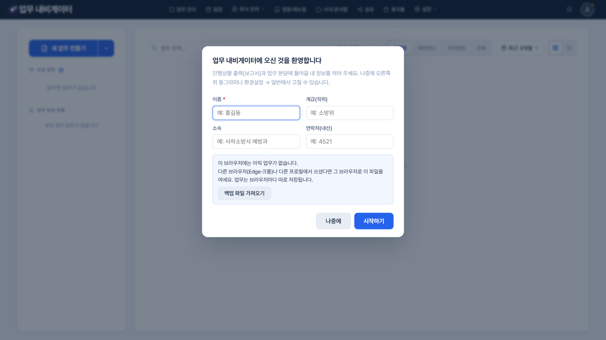
- 처음 켜면 한 번 「업무 내비게이터에 오신 것을 환영합니다」 창이 뜹니다. 이름(꼭)·계급·소속·연락처를 적고 [시작하기](또는 Enter)를 누릅니다. 이 내 정보는 진행상황 출력의 작성자와 업무 분담의 보내는 사람으로 쓰입니다.
- 지금 적기 어렵다면 [나중에](Esc). 오른쪽 위 이름 첫 글자 동그라미(이름이 없으면 사람 아이콘 + 주황 점)를 누르면 언제든 환경설정 → 일반 → 내 정보에서 고칩니다.
- 이 브라우저에 업무가 하나도 없으면 「다른 브라우저(엣지·크롬)에서 쓰셨다면 그 브라우저로 여세요 · [백업 파일 가져오기]」 안내가 함께 나옵니다 — 업무는 브라우저마다 따로 저장되기 때문입니다.

- 왼쪽 위 [새 업무 만들기]를 누르면 바로 만들기 창이 열립니다(옆 ▾는 업무 가져오기·연습 업무 넣기). 가운데에는 업무 카드가 놓이고, 위쪽 탭으로 진행중 · 레퍼런스 · 처리완료 · 전체를 골라 봅니다.
- 맨 왼쪽 위 「✦ 업무 내비게이터」 로고를 누르면(또는 초점을 두고 Enter) 언제든 처음 화면(업무 목록 맨 위)으로 돌아옵니다 — 열린 창을 닫고 일하는 화면에서 나오며, 검색어는 지우고 정렬은 그대로 둡니다. 체크리스트를 고치던 중이면 「변경 내용을 저장할까요?」를 먼저 묻습니다.
- 업무는 기본으로 최근 진행순 — 최근에 체크한 업무와 방금 만들거나 복사·가져온 업무가 맨 위에 옵니다. 정렬을 바꾸면 다음에 켤 때도 그대로입니다. 오른쪽 기간 단추(기본 최근 3개월)로 보이는 범위를 고릅니다 — 오래된 업무가 안 보이면 「전체 기간」. 목록형(오른쪽 ☰)에서는 제목 줄을 눌러 정렬합니다.
- 마감 임박: 기한이 지났거나 곧 다가오는 업무가 급한 순서로 모입니다. 업무 전체 마감뿐 아니라 항목(할 일) 마감도 함께 올라오고, 누르면 그 업무가 바로 열립니다.
- 업무 분담 현황 — 회신 기다리는 중: 동료에게 맡기고 아직 회신을 받지 못한 단계가 「담당자 · 단계 · 회신 기한」으로 보입니다. 담당자로 받은 업무는 「내가 회신할 일」에 모입니다.

- 프로그램을 켜면 하루 한 번 화면 가운데에 마감 임박 알림이 뜹니다. 「기한 지남 · 오늘 마감」처럼 요약하고 급한 업무부터 5건까지 보여 줍니다(넘으면 「외 n건」). [닫기]·바깥 누르기·Esc로 닫습니다.
- 업무 이름을 누르면 그 업무가 열리고, [마감 임박 목록 보기 →]를 누르면 왼쪽 「마감 임박」 목록으로 가서 깜박여 알려 줍니다. 알림 횟수(하루 한 번 · 열 때마다 · 끄기)는 환경설정 → 알림에서 정합니다.

- 맨 위 오른쪽 🔔를 누르면 알림센터가 열립니다. 지나간 마감 알림과 시스템 알림을 다시 볼 수 있습니다. 전체 · 안 읽음 · 업무·마감 · 시스템으로 나누어 보고, 모두 읽음으로 빨간 숫자를 지웁니다. Esc나 바깥을 누르면 닫힙니다.

- 체크리스트 생성: 단계와 할 일을 직접 적어 시작합니다(왼쪽 [새 업무 만들기]와 같음).
- 업무 가져오기: 동료에게 받은 업무 파일(.json)을 엽니다. 그대로 가져오기(체크·처리결과 그대로 — 인수인계) 또는 복사하여 시작(체크를 비우고 오늘 날짜로 새로, 마감일도 정할 수 있음)을 고릅니다. [취소]·Esc로 아무것도 가져오지 않고 닫습니다.
- 연습 업무 넣기: 아래 장면을 보세요.
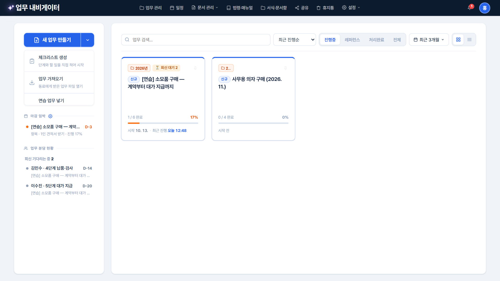
- ▾ → 연습 업무 넣기를 누르면 업무 2개가 들어옵니다: [연습] 소모품 구매 — 계약부터 대가 지급까지(6단계 · 할 일 25개) · [연습] 월간 업무 실적 보고 (매달 5일). 업체·금액은 모두 가상입니다.
- 소모품 구매에는 줄마다 업무팁(⚠ 놓치기 쉬운 것 · 근거 조문), 건너뛰기 버튼 5개(1인 견적 · 2인 이상 견적 · 견적 생략 · 5천만원 이하/초과), 빈 양식 2개(각서 · 수의계약 공개내역서), 참고 자료(지방계약법 시행령·시행규칙)가 들어 있습니다. 근거는 2026. 7. 1. 기준이라 실제 업무 전에는 최신 법령을 확인하세요.
- 마감일은 넣는 날을 기준으로 정해져 바로 「마감 임박」·일정에 나옵니다. 한 번 더 넣으면 「(2)」가 붙은 새 연습 업무가 들어오고, 다 해 본 뒤에는 휴지통으로 지우면 됩니다. 같은 업무는 사용설명서/연습업무.json을 [업무 가져오기]로 열어도 됩니다.
- 따라 하는 순서: 2장(체크·처리결과·길잡이) → 2장 끝(갈림길에서 [1인 견적]) → 5장(04 납품·검사를 검사 담당에게) → 진행상황 출력 → 7장(완료 처리 → 레퍼런스).
1. 새 업무 만들기 (4단계)
예시: 사무용 의자 구매 (2026. 11.) — 연습 업무를 본보기 삼아 내 업무를 만듭니다. 이름 → 절차 → 업무팁·서식 → 참고 자료 순서이고, ③·④는 건너뛰고 [바로 시작]해도 됩니다. 쓰는 중에 창을 닫으면(✕·Esc) [임시 저장하고 닫기 / 버리기 / 계속 작성]을 묻고, 임시 저장하면 다음에 열 때 「작성하던 업무가 있습니다 — 이어서 쓰기 / 버리고 새로 시작」을 묻습니다. 위 [초기화]는 처음부터 다시 씁니다.

- 업무 이름만 적으면 바로 시작할 수 있습니다. 마감일·폴더는 일하면서 정해도 됩니다.
- Enter를 누르면 다음 단계로 넘어갑니다. 이름 없이 [다음]을 누르면 「업무 이름을 먼저 적어 주세요」.

- 단계(번호 네모 01·02…)를 적고, 그 단계에서 할 일(동그라미)은 아래 줄에서 Tab을 눌러 넣습니다. 일하는 화면과 같은 모양입니다.
- 예: 01 구매 준비 → 02 계약 → 03 납품·검사 → 04 대가 지급. 할 일은 따로 끝내고 따로 체크할 수 있는 일 하나씩 나누면(단계마다 2~8개) 무엇을 했는지 분명해집니다.
- Enter 다음 항목 · Tab 할 일로 ⇄ Shift+Tab 단계로 · Backspace 빈 줄 지우기 · ⠿ 끌어서 순서 변경. [이전]으로 돌아가도 적은 것은 그대로입니다.

- 필요한 항목에만 줄의 업무팁 +· 서식 +를 눌러 붙입니다. 누르면 항목 창이 그 탭으로 열리고, 닫으면(Esc) 이 창으로 돌아옵니다.
- 서식 파일은 항목 줄에 끌어다 놓아도 그 항목의 서식으로 연결됩니다 (서식·문서함에도 저장).

- 항목 창의 업무팁 탭은 세 칸입니다: ⚠ 놓치기 쉬운 것(빨간 테두리, 한 줄에 하나 — 틀리면 문제가 되는 기한·요건·자주 하는 실수) · 업무 팁(하는 방법·순서, 위 기호 단추 □ ○ - 로 단계 나누기) · 근거(법령 조문·지침, 한 줄에 하나).
- 예: 놓치기 쉬운 것 「추정가격 2천만원 초과면 1인 견적 불가 — 2인 이상 견적」 · 근거 「시행령 제30조제1항제2호」 — 다음 담당자는 이 항목에서 조문을 바로 보고 일합니다.
- 저장 버튼이 없습니다 — 칸을 벗어나거나 창을 닫으면(Esc 포함) 바로 저장되고 「변경 사항이 저장되었습니다」가 뜹니다. 세 칸은 저장할 때 글 하나(「⚠ …」·「근거: …」 줄)로 합쳐지므로 예전 판·내보낸 파일과 그대로 맞습니다. [정리]는 가운데 칸만 다듬습니다.
- 어디에 적느냐: 할 일 모두에 같이 필요한 것은 단계에 한 번 적으면 그 단계 할 일 모두에 「단계 공통」으로 보이고, 한 할 일에만 필요한 것은 그 할 일에 적습니다. 같은 내용을 또 적었으면 [여기 같은 내용 지우기]가 나옵니다.

- 업무팁 탭 아래 예시·사진에 작성례·현장 사진·시스템 화면 캡처를 넣습니다. [⬆ 내 PC에서 올리기] · 끌어다 놓기 · 화면 캡처는 Ctrl+V. 누르면 미리보기가 열리고 ← →로 넘겨 봅니다.
- 구분: 채워서 쓰는 빈 양식은 [서식] 탭(서식·문서함에서 연결) · 「이렇게 쓰면 된다」는 작성례·사진은 업무팁. 예시에는 이름·주민번호 등을 가린 사본만 넣으세요.
- 예시·사진은 노하우라서 공유·내보내기·레퍼런스 사본에도 함께 갑니다 (처리결과 첨부는 레퍼런스에 복사되지 않음).

- 서식 탭의 🗂 서식·문서함에서 고르기를 누르면 서식·문서함 창이 고르기 모드로 열립니다. 예: 「계약서 작성」에 각서(수의계약 배제사유) 양식.
- 줄을 눌러 체크하고 [서식 연결하기]를 누릅니다. 두 번 누르면 미리보기, Shift+클릭으로 범위 고르기. 창에 파일을 끌어다 놓으면 지금 폴더에 저장되고 바로 체크됩니다.

- 붙인 항목은 「업무팁 ✓ · 서식 1」처럼 버튼에 표시됩니다.

- 업무 전체에서 참고할 법령·지침·공문을 📚 법령·매뉴얼에서 고르기로 고릅니다. 예: 지방계약법 시행령. 아래 [참고 자료 연결하기]를 누르면 연결됩니다.

- 연결한 자료가 목록에 보입니다. ⬆ 내 PC에서 올리기로 새 파일을 넣을 수도 있습니다 (법령·매뉴얼에도 저장).
- [시작하기]를 누르면 업무가 만들어지고 일하는 화면이 열립니다. 다음 장부터는 연습 업무(소모품 구매)로 일하는 모습을 봅니다.
2. 일하는 화면
체크하고, 처리결과를 적고, 업무팁·근거·서식을 보며 일합니다. 예시는 연습 업무 「소모품 구매」로, 01 구매 준비를 끝내고 02 계약 방법 정하기를 하는 중입니다.

- 왼쪽: 진행률·마감일·일정 보기, 체크리스트 편집 · 업무 분담 · 진행상황 출력 · 내보내기 · 삭제
- 가운데: 참고 자료 칩(한 줄)과 체크리스트. 단계는 번호 네모, 할 일은 동그라미. 지금 단계만 펼쳐지고 나머지는 접혀 있습니다.
- 오른쪽: 업무 절차 — 전체 흐름과 지금 단계, 「지금 할 일」의 업무팁·서식. 맨 위 「✓ 완료 1/6단계 ▾」 줄은 스크롤해도 늘 보이고, 누르면 끝난 단계가 펼쳐집니다.
- Esc를 누르면 한 단계씩 닫힙니다: 떠 있는 메뉴·창 → 고른 줄 → 업무 목록으로.

- 동그라미를 누르면 체크됩니다(다시 누르면 풀림). 단계의 할 일을 모두 끝내면 단계 네모가 초록 ✓로 채워지고 다음 단계가 펼쳐집니다. 끝난 단계의 할 일을 풀면 그 단계도 다시 진행 중이 됩니다. 앞 단계가 안 끝났는데 뒤를 체크하면 「앞 단계가 아직 진행중입니다」로 알려 줍니다.
- 줄을 한 번 누르면 처리결과 한 줄 입력칸이 열립니다. Enter 저장하고 다음 할 일로, Shift+Enter 줄바꿈, Esc 닫기. 칸 옆 📎로 결과 파일을 붙이고 [⤢ 자세히]로 항목 창을 엽니다.
- 줄은 제목과 꼭 필요한 것만 한 줄로 보입니다. 단계 오른쪽 「1/2」는 끝낸 할 일 수, 날짜는 완료 날짜 또는 마감 D-n. 업무팁·서식이 있는 줄은 제목 뒤에 작은 점(•).
- 줄에 마우스를 올리면 날짜 자리에 길잡이 · 업무팁 · 서식 · 마감일 · 버튼이 나옵니다. 내용이 있는 버튼은 색, 없는 버튼은 연한 회색 선입니다.
- 건너뛰기 버튼이 있는 줄(예: 「금액 기준 확인 — 갈림길」)에는 제목 아래 [1인 견적] [2인 이상 견적] [견적 생략] 단추가 나옵니다 — 이 장 끝 「갈림길에서 건너뛰기」.

- 오른쪽 업무 절차의 업무팁은 세 칸으로 보입니다: 맨 위 놓치기 쉬운 것(빨간 상자) · 가운데 업무 팁 · 맨 아래 근거. 길면 가운데만 줄여 보이고, 놓치기 쉬운 것과 근거는 늘 다 보입니다.
- 「지난번엔 이렇게」: 다른 업무(처리완료 등)에서 같은 이름의 할 일에 남긴 처리결과가 최근 것부터 2개 나옵니다. 예: 5월에 끝낸 「소모품 구매 (토너·복사용지)」의 견적 결과. 누르면 그때의 항목 창이 열려 증빙까지 봅니다 — 끝낸 업무를 지우지 말고 처리완료로 남겨 두면 다음 사람이 이렇게 봅니다.
- 업무팁 아래 예시·사진 썸네일이 한 줄로 보입니다. 누르면 미리보기, ← →로 넘겨 봅니다. 「필요 서식·문서」 이름을 누르면 바로 미리보기, 마우스를 올리면 ⬇ 내려받기.

- 체크리스트에서 줄을 한 번 누르면 오른쪽 업무 절차에서 그 항목이 제자리에서 펼쳐져 업무팁·서식이 보입니다. 예: 03 계약의 「배제사유 확인 · 각서 받기」를 골라 각서 양식을 미리 내려받아 둡니다.
- 맨 위 「완료」 줄 자리가 고른 항목 이름 한 줄로 바뀌고, 그동안 지금 할 일 상자는 접힙니다. 지금 할 일로를 누르거나 같은 줄을 다시 누르면(또는 Esc) 원래대로 돌아갑니다 — Esc는 미리 보기만 풀고 화면은 그대로입니다.
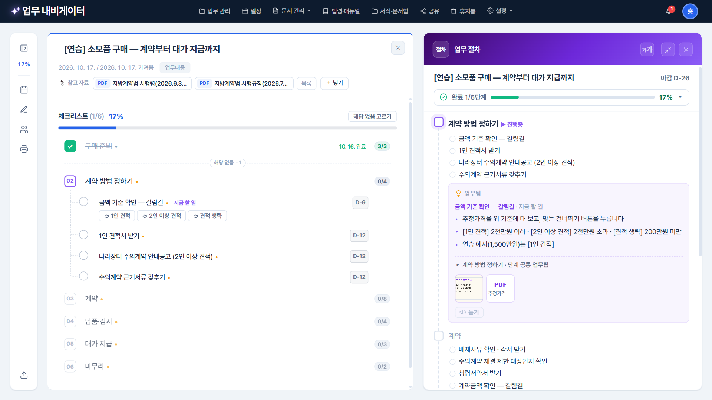
- 업무 절차 머리의 ⤢(또는 머리를 두 번 누르기)를 누르면 왼쪽 패널이 아이콘 줄로 접히고 업무 절차가 넓어지며 글자도 10% 커집니다. 가운데 체크리스트는 너비 그대로입니다.
- 아이콘 줄: 펼치기 · 진행률 · 일정 · 체크리스트 편집 · 업무 분담 · 진행상황 출력 · 내보내기 (마우스를 올리면 이름). 다시 ⤢를 누르면 원래대로. 다음에 열어도 기억합니다.
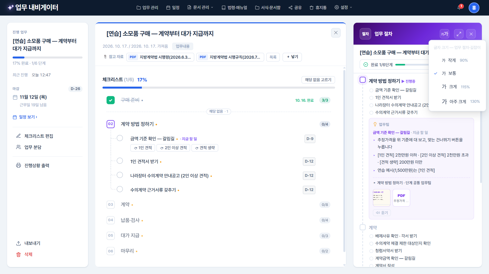
- 업무 절차·길잡이 머리의 「가가」를 누르면 작게 90% · 보통 · 크게 115% · 아주 크게 130%를 고릅니다. 업무팁·길잡이 본문만 커지고 나머지 화면은 그대로입니다. 보통이 아니면 단추에 색이 들어옵니다.
- 환경설정 → 일반 → 화면의 「읽는 글 크기」도 같은 설정입니다. 메뉴는 Esc로 닫습니다(뒤 화면은 그대로).

- 줄을 두 번 누르면 항목 창이 열립니다 (처리결과·업무팁·서식).
- 예: 「조달청 가격정보 · ○○가구 · △△오피스 3곳 비교 — 최저 13,980,000원」 + 가격 조사표 PDF·조달청 화면 캡처 — 절차를 지켰다는 증빙이 그 항목에 함께 남습니다.
- 적고 바로 Esc를 눌러도 저장됩니다. 제목 옆 번호: 단계는 「01」, 할 일은 「01-3」.

- 서식 탭에는 채워서 쓰는 빈 양식을 둡니다. 예: 「배제사유 확인 · 각서 받기」의 각서(수의계약 배제사유).
- 연결한 서식을 누르면 미리보기, 마우스를 올리면 ⬇ 내려받기·✕ 빼기, 끌어서 순서 바꾸기. 오른쪽 클릭: 보기 · 내려받기 · 서식·문서함에서 위치 보기 · 🖼 업무팁 예시로 옮기기 · ⤴ 단계 공통으로 / ⤵ 할 일로 옮기기 · ✕ 빼기.
- 서식·문서함에서 이 양식을 새 판으로 교체하면 이 항목도 새 판을 봅니다(8장).

- 제목 아래 참고 자료 칩은 늘 한 줄입니다 (2개 + 「+N개」·「목록」). 오른쪽 [＋ 넣기]로 바로 넣고, 칩 오른쪽 클릭으로 보기·내려받기·위치 보기·빼기.
- 누르면 떠 있는 목록: 줄 누르기 = 보기 · ⬇ 내려받기 · ✕ 빼기 · [⬇ 모두 내려받기] · [📚 법령·매뉴얼에서 관리]

- PDF·한글(HWPX)·워드·사진·텍스트를 프로그램 안에서 봅니다. 예: 지방계약법 시행령.
- 위쪽 [⬇ 내려받기]로 바로 저장 · 가장자리나 모서리를 끌어 크기 조절(기억됨) · ⤢ 전체 화면 · Esc 닫기
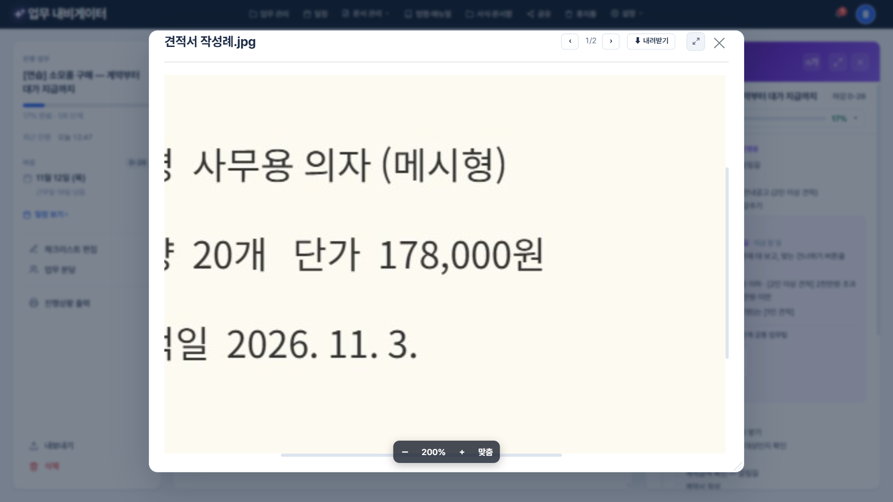
- 사진·화면 캡처를 누르면 누른 곳을 중심으로 확대되고, 다시 누르면 창에 맞춥니다. Ctrl+휠로 조금씩 확대·축소, 확대한 사진은 끌어서 옮깁니다.
- 아래 가운데 막대: [－] [배율] [＋] [맞춤]. 키보드 ＋ / － / 0(맞춤)도 됩니다.

- 맨 위에 체크 (완료) / 체크 취소, 그 줄에 건너뛰기 버튼이 있으면 그 버튼(⤼ 1인 견적 …)이 함께 나옵니다.
- 해당 없음으로 빼기: 이번 업무에서 할 필요 없는 항목을 뺍니다. 알림의 [되돌리기]로 바로 되살릴 수 있고, 여러 항목은 「여러 항목 해당 없음…」 또는 체크리스트 위 [해당 없음 고르기].
- 업무 길잡이 · 처리결과 · 업무팁 · 서식 · 마감일 정하기 — 마우스를 올리면 나오는 버튼 줄과 같은 순서·같은 아이콘이고, 버튼 줄의 를 눌러도 버튼 바로 아래에 같은 메뉴가 열립니다. Esc는 메뉴만 닫습니다.
- 완료한 업무·레퍼런스도 메뉴가 나옵니다: 보는 명령은 그대로, 고치는 명령은 회색이고 맨 아래 「[완료 취소] 후 고칠 수 있습니다」(레퍼런스는 「[복사하여 시작]한 업무에서…」).
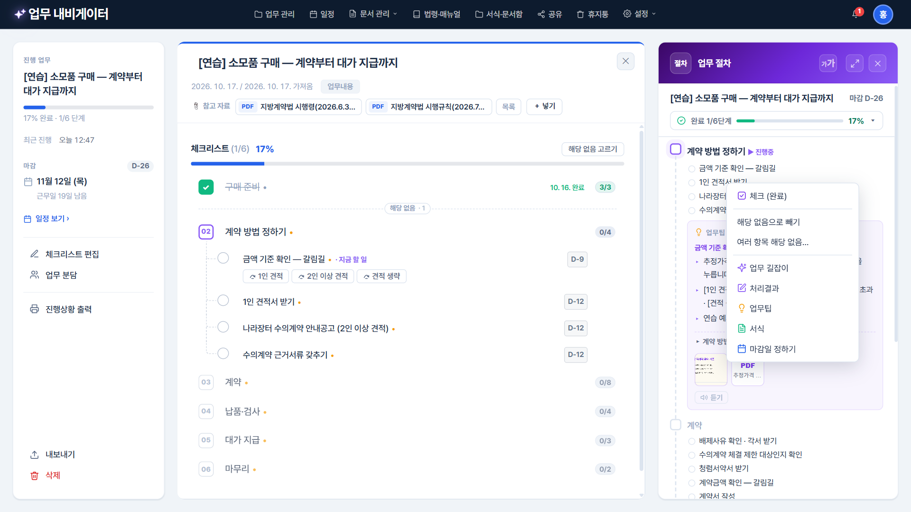
- 오른쪽 업무 절차의 단계·할 일 줄을 오른쪽 클릭해도 가운데 체크리스트와 같은 메뉴가 나옵니다 — 패널만 보며 일할 때 체크·처리결과·업무팁을 바로 엽니다.
- 접힌 알약(「해당 없음 · 1」·「⤼ 1인 견적 · 1」)을 오른쪽 클릭하면 펼치기/접기 · 모두 되살리기 / 건너뛰기 취소(알림 [되돌리기]).

- 줄에 마우스를 올려 길잡이를 누르거나 오른쪽 클릭 → 업무 길잡이: 그 할 일의 업무팁(놓치기 쉬운 것·근거 포함, 예시 썸네일) · 서식 · 「단계 공통」 · 참고 자료가 묶음별로 모여 나옵니다. 비어 있는 묶음은 보이지 않습니다.
- 참고 자료가 4개 이상이면 3개만 보이고 「▸ n개 더 보기」(묶음 머리를 눌러도 펼침, 기억됨). 머리 「가가」로 글자 크기, ⤢로 전체화면.
- 아래 「다음 할 일 (단계 › 할 일) ›」로 다음 할 일의 길잡이로 넘어가고, [항목 창에서 고치기]로 업무팁·예시·서식을 고칩니다 — 항목 창을 닫으면 같은 길잡이로 돌아와 고친 내용이 바로 보입니다. 🔈 듣기로 소리로 들을 수도 있습니다(자동으로 읽기는 환경설정에서). Esc로 닫습니다.
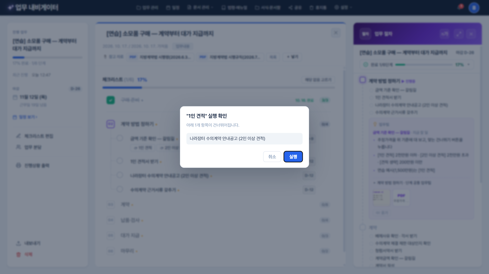
- 02 「금액 기준 확인 — 갈림길」 줄의 [1인 견적]을 누르면 무엇을 건너뛰는지 먼저 보여 줍니다: 「나라장터 수의계약 안내공고 (2인 이상 견적)」 1개.
- [실행](또는 Enter)을 누르면 건너뛰고, [취소]·바깥 누르기·Esc는 아무것도 바꾸지 않습니다. 금액 기준(2천만원 이하·초과·200만원 미만)은 그 줄의 업무팁에 있습니다.
- 건너뛰기 버튼은 조건(금액·처분 종류 등)에 따라 필요 없는 절차를 한 번에 빼고 까닭을 남기는 기능입니다. 갈림길이 있는 업무는 레퍼런스에 버튼을 꼭 넣어 두세요(3장).
- 해당 없음으로 빼거나 건너뛰기 버튼으로 건너뛴 단계·할 일은 오른쪽 업무 절차에서 사라지지 않고 제자리에 흐리게(취소선) 남습니다. 예: 「1인 견적」으로 건너뛴 나라장터 안내공고, 1인 견적이라 해당 없음으로 뺀 예정가격 작성.
- 알약으로 까닭을 나눕니다: 회색 「해당 없음」 · 보라 「⤼ 버튼 이름」. 마우스를 올리면 사유가 보이고, 누르면 체크리스트의 그 줄로 갑니다. 연달아 여러 단계를 건너뛰면 「⤼ n개 건너뜀 ▸」 한 줄로 접히고, 진행 줄에는 「완료 1/6단계 · 건너뜀 1」처럼 나옵니다.
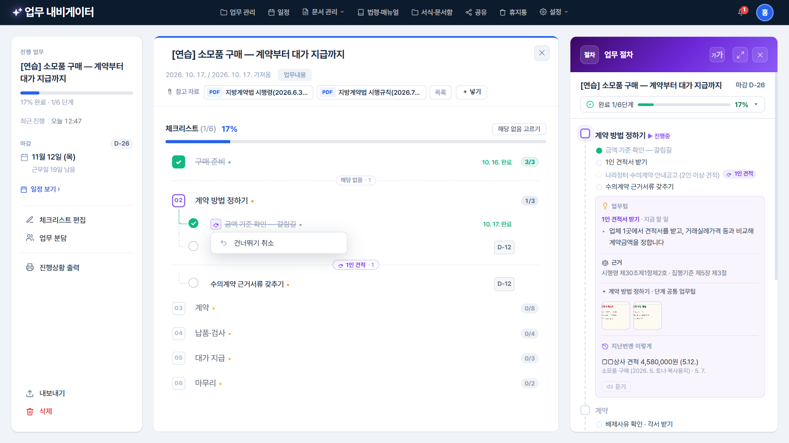
- 버튼을 누른 줄과 그 버튼으로 건너뛴 줄은 제목 앞에 보라 ⤼ 표시가 붙습니다(마우스를 올려도 가려지지 않음). 펼친 건너뛴 줄은 보라 테두리입니다.
- ⤼를 누르면 [건너뛰기 취소] 하나만 나옵니다. 묻지 않고 바로 풀리고, 알림의 [되돌리기]로 다시 건너뜁니다. 오른쪽 클릭 메뉴 맨 위에도 「건너뛰기 취소」가 있습니다.
- 가운데 체크리스트에서 건너뛴 줄은 점선 위 알약 「⤼ 1인 견적 · 1」(보라)로, 직접 뺀 줄은 「해당 없음 · 1」(회색)로 따로 접힙니다. 알약을 누르면 펼쳐집니다.
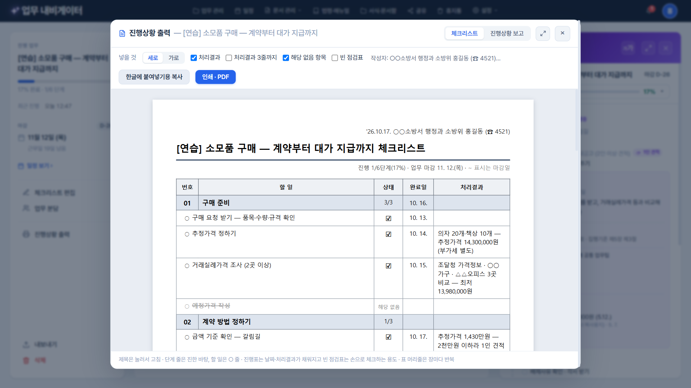
- 업무 화면 왼쪽 [진행상황 출력]을 누르면 창이 열리고 「체크리스트」 탭이 먼저 나옵니다. 처음 한 번은 작성자 정보(내 정보)를 확인합니다.
- 제목은 눌러서 고칩니다(Enter로 끝). 표: 단계 줄은 진한 바탕(번호 · 단계 · 끝낸 할 일 수 · 완료일 · 처리결과), 할 일은 「○ 할 일」 · 상태 ☑ ☐ · 완료일(안 끝난 것은 회색 「~마감일」) · 처리결과. ☐/☑가 한 줄로 맞춰 있어 종이에 펜으로 체크하기 쉽습니다.
- 위 「넣을 것」: 세로 / 가로 · 처리결과 · 처리결과 3줄까지 · 해당 없음 항목 · 빈 점검표(점검 항목 · 확인 · 확인일 · 비고 — 현장에서 손으로 체크). 여러 장이면 머리줄이 장마다 반복됩니다.
- [인쇄 · PDF]를 누르면 작은 인쇄 창이 따로 열립니다(대상에서 「PDF로 저장」). [한글에 붙여넣기용 복사] 후 한글에서 Ctrl+V. Esc로 출력 창을 닫으면 일하는 화면 그대로입니다.
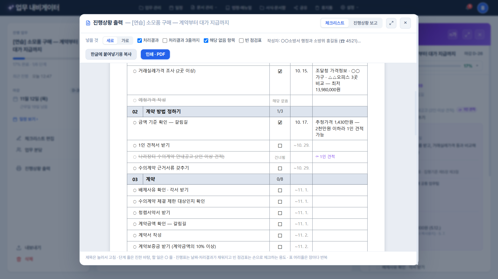
- 「해당 없음 항목」을 체크하면 직접 뺀 줄은 「해당 없음」, 건너뛰기 버튼으로 건너뛴 줄은 「건너뜀」과 처리결과 칸의 「⤼ 1인 견적」으로 나와 종이에서도 왜 하지 않았는지 보입니다 — 점검·감사 때 절차를 빠뜨린 것이 아니라는 증빙이 됩니다.
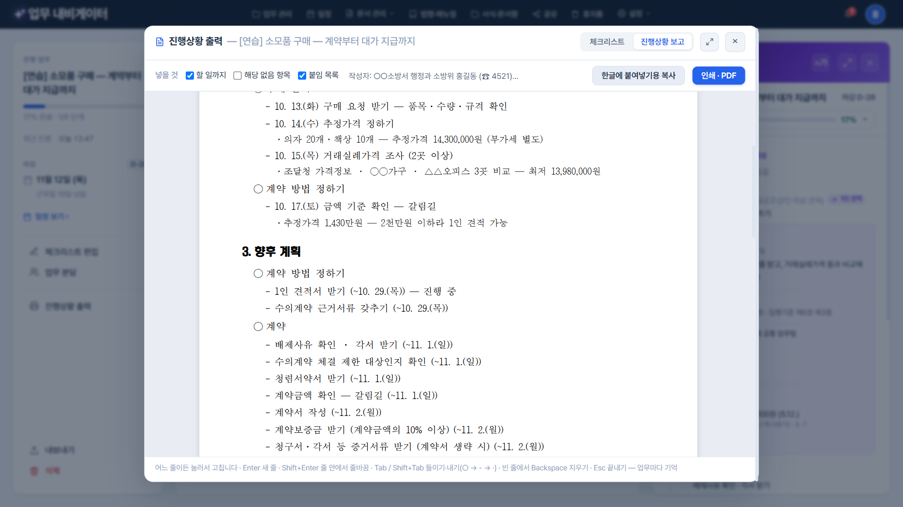
- 같은 창 위 「진행상황 보고」 탭: 1. 「업무명」의 진행상황 보고입니다(진행률·마감) → 2. 추진 경과(끝낸 단계·할 일과 처리결과) → 3. 향후 계획(남은 일과 마감일) → 4. 담당자 의견 · 붙임. 맨 위 오른쪽 한 줄에 「'26.10.17. 소속 계급 이름 (☎ 내선)」.
- 종이 위 어느 줄이든 눌러서 바로 고칩니다(업무마다 편집본으로 기억, [↺ 처음 내용으로]로 되돌림). Enter 새 줄 · Shift+Enter 줄바꿈 · Tab/Shift+Tab 들이기·내기 · 빈 줄에서 Backspace 지우기.
- 미리보기는 A4 한 장씩 실제 인쇄와 똑같이 나뉘고 쪽 번호 「- 1 -」이 붙습니다. [한글에 붙여넣기용 복사] · [인쇄 · PDF].
3. 체크리스트 편집
구조를 바꾸는 화면입니다 (추가·삭제·위치·단계↔할 일·이름·건너뛰기). 탐색기·엑셀처럼 한 번 클릭 = 고르기, 두 번 클릭 = 이름 바꾸기입니다. [저장]을 눌러야 반영되고, 진행 상태(체크·처리결과)는 그대로 남습니다.

- 왼쪽 [체크리스트 편집]을 누릅니다. 줄을 한 번 누르면 고르기(파란 바탕), 두 번(또는 F2) 누르면 이름 바꾸기입니다. 이름 바꾸기에서 Enter는 이름만 확정하고, Esc는 원래 이름으로 돌립니다.
- 위 명령 줄: ＋ 단계 · ＋ 할 일 · 이름 바꾸기 · ↑ ↓ · ⇥ 할 일로 · ⇤ 단계로 · 건너뛰기 · 삭제 — 오른쪽 클릭 메뉴도 같은 명령·같은 순서입니다(잘라내기·복사·붙여넣기 더). 명령 줄에 마우스를 올리면 「한 번 누르면 고르기 · 두 번 누르면 이름 바꾸기 · 끌면 옮기기」가 보입니다.
- Delete 지우기(알림 [실행 취소]) · Ctrl+Z 되돌리기 · Insert 아래에 새 줄 · Alt+Shift+↑↓ 위치 · Tab/Shift+Tab 할 일↔단계 · 끌어서 옮기기. 새 줄에서는 Enter가 다음 새 줄을 만듭니다.
- [편집 취소]나 Esc를 누르면 바꾼 것이 있을 때 「변경 내용을 저장할까요?」 — [저장] · [저장 안 함](편집 전으로) · [취소](계속 편집). 이름을 적지 않은 새 줄은 저절로 지워집니다.

- 갈림길이 되는 줄을 고르고 [⤼ 건너뛰기]를 누릅니다(오른쪽 클릭 → 건너뛰기…도 같음). 체크리스트가 고르기 모드(보라)로 바뀝니다. 예: 「계약금액 확인 — 갈림길」의 [5천만원 이하] 버튼이 건너뛸 항목.
- 맨 위 칸에 버튼 이름을 적고, 아래 목록에서 건너뛸 항목을 체크합니다. 단계를 체크하면 그 할 일도 함께. 기준 줄보다 앞의 줄은 고를 수 없습니다.
- Enter 또는 [저장] = 만들기 · Esc 또는 [취소] = 그만두기. 이미 버튼이 있는 줄에서 [건너뛰기]를 누르면 버튼 이름(고치기·🗑 지우기) · 새 건너뛰기 버튼 메뉴가 열립니다.

- 버튼이 있는 줄은 채운 알약 「⤼ 5천만원 이하」, 건너뛰어지는 줄은 같은 색 테두리 태그입니다. 편집을 마치면 왼쪽 [✓ 저장].
4. 일정과 마감
업무 마감일과 할 일 마감일을 정하면 달력과 「이번 주 할 일」에 모이고, 사이드바 「마감 임박」과 마감 알림에도 그대로 쓰입니다.

- 왼쪽 마감 카드 또는 줄의 버튼으로 마감일을 정합니다. 법정 기한이 있는 일은 할 일 마감으로 잡아 두세요. 예: 대가 지급은 청구일부터 5일 안.
- 일정(맨 위 [일정] 또는 왼쪽 [일정 보기]): 달력에 업무·할 일·회신 기한이 표시되고, 오른쪽 「이번 주 할 일」에 기한 지남 · 오늘 · 내일 · 날짜별로 모입니다. 날짜를 누르면 그날 항목, 항목을 끌어 다른 날짜에 놓으면 마감일이 바뀝니다. 공휴일도 표시됩니다. Esc로 닫습니다.
5. 업무 분담과 회신 대기
단계나 할 일을 동료에게 맡기고, 요청 파일을 보내고, 회신 파일을 받아 합칩니다. 서버 없이 파일로 주고받습니다. 받는 사람은 맡은 단계의 업무팁·근거·서식까지 함께 받으므로, 관리자는 「무엇을 · 언제까지 · 어떤 근거로」를 한 번에 지시할 수 있습니다.

- 왼쪽 [업무 분담]을 누릅니다. ① 함께 일할 사람(주소록에서 추가)과 회신 기한 → ② 단계 나누기: 예) 04 납품·검사 → 김민수, 05 대가 지급 → 이수진 (단계를 맡기면 그 할 일도 함께) → 전달사항 한 줄.
- [📨 요청 파일 만들기]로 파일 하나를 만들어 맡은 사람 모두에게 메신저·메일로 보냅니다(받은 사람이 열고 본인 이름을 고름). 창 위 탭: 요청 보내기 · 회신 현황 · 주고받은 기록.
- 요청 파일을 만들기 전에 창을 닫으면(Esc) 「보내지 않은 지정이 있습니다」 — [임시 저장하고 닫기] · [지우고 닫기] · [계속 작업]. 임시 저장한 지정은 왼쪽 단추에 「보내기 전 n」으로 남습니다.

- 보낸 단계는 체크리스트에서 ⏳ 「김민수 · 회신 대기 · D-14」 줄로 바뀝니다.
- 담당자 쪽: 받은 요청 파일을 [▾ → 업무 가져오기]로 열고 본인 이름을 고릅니다 → 맡은 단계만 체크·처리결과·첨부(다른 단계는 보기 전용) → 왼쪽 [관리자에게 회신]에서 중간 회신 또는 최종 회신.
- 관리자 쪽: 회신 파일을 왼쪽 [회신 가져오기](또는 업무 분담 창에 끌어다 놓기·[업무 가져오기])로 열면 체크·처리결과·첨부가 합쳐지고 「바뀐 곳」 목록이 뜹니다. 같은 회신을 두 번 열어도 한 번만 반영됩니다.

- ⏳ 맡긴 줄을 누르거나 오른쪽 클릭하면 메뉴: 회신 대기 줄은 「↩ 회수하고 직접 처리…」 · 「📋 회신 현황 보기」, 보내기 전 줄은 「↩ 맡기기 취소 (직접 처리)」 · 「✎ 업무 분담에서 고치기」(알림 [되돌리기]).

- 회신을 기다리는 줄을 체크하거나 회수를 고르면 확인 창이 뜹니다 — 담당자가 이미 일하고 있을 수 있어 먼저 묻습니다(다른 사람에게 영향이 가는 일). [회수하고 직접 처리] · [회신 기다리기].
- 보내기 전 줄을 체크하면 묻지 않고 맡기기가 취소되고 알림 [되돌리기]로 되살립니다. 이미 받은 중간 회신 처리결과는 지우지 않고 남깁니다.

- 메인 화면 왼쪽 업무 분담 현황에 모든 업무의 회신 대기가 「누가 · 어느 단계 · 언제까지」로 모이고, 누르면 그 업무가 열립니다.

- 자주 함께 일하는 사람을 소속(묶음)별로 저장합니다. 업무 분담에서 [＋ 주소록에서 추가]로 고르고, 환경설정 → 일반 → [주소록 관리]에서도 엽니다.
6. 업무 공유
만든 업무를 동료에게 넘기거나 같은 업무를 맡을 후임에게 전합니다. 부서 표준 레퍼런스를 만들어 이 방법으로 나눠 주면 모두 같은 절차로 일합니다.

- 맨 위 [공유]를 누르고, 보낼 업무를 체크한 뒤 [업무 파일 만들기]. 서식·업무팁·첨부·참고 자료까지 파일 하나에 담깁니다.
- 받은 사람은 [▾ → 업무 가져오기]로 열고 「그대로 가져오기」(이어서) 또는 「복사하여 시작」(새로)을 고릅니다.
- 업무 하나는 업무 화면 왼쪽 [내보내기]로 바로 저장해도 같은 파일입니다. 업무와 관리 자격까지 넘길 때(인수인계 중 회신을 기다리는 단계가 있을 때)는 [업무 분담] 창 위 「다른 사람에게 넘기기」.
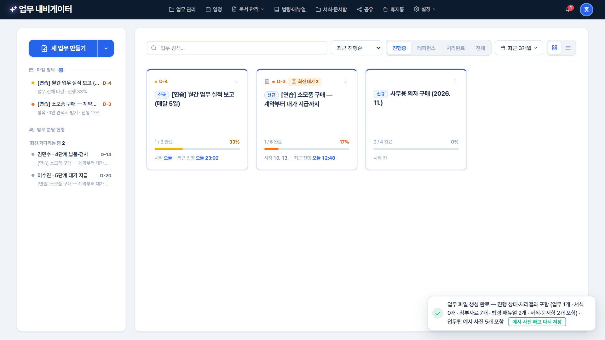
- 내보내기·공유·업무 분담 파일은 묻지 않고 바로 저장되고, 업무팁 예시·사진이 들어 있으면 알림에 「업무팁 예시·사진 n개 포함」이 나옵니다.
- 내 기관 시스템 화면처럼 남에게 넘기면 안 되는 캡처가 있으면 알림의 [예시·사진 빼고 다시 저장]. 이 PC의 사진은 그대로 남습니다.
7. 마무리 — 처리완료 · 레퍼런스 · 보관
끝난 업무는 처리완료로 옮기고, 잘 된 업무는 레퍼런스(본보기)로 등록해 다음에 그대로 다시 씁니다. 예시는 연습 업무 「월간 업무 실적 보고」.

- 모든 단계가 끝나면 왼쪽 아래에 [✅ 완료 처리]가 나타납니다. 누르면 묻지 않고 「처리완료」 탭으로 옮겨지고, 알림의 [되돌리기]나 [↩ 완료 취소]로 되돌립니다.
- 완료한 업무는 체크가 잠기고(왼쪽 위 「처리완료 업무」), 고치려면 [완료 취소]를 누릅니다.

- 메인 화면 처리완료 탭에서 끝낸 업무를 봅니다. 지우지 말고 남겨 두면 다음 담당자가 같은 할 일에서 「지난번엔 이렇게」로 이 기록을 봅니다.

- 업무 관리에서 업무를 오른쪽 클릭 → 레퍼런스로 등록 (사본 만들기) (완료한 업무 화면 왼쪽 [레퍼런스로 등록]도 같음). 이름·폴더를 확인하는 창이 뜨고 [만들기]·[취소](Esc).
- 체크를 비운 깨끗한 사본이 레퍼런스가 되고, 원래 업무는 처리 기록과 함께 그대로 남습니다.

- 레퍼런스는 책 모양 표시와 함께 레퍼런스 탭에 모입니다. 다음 달이 되면 레퍼런스를 열고 [복사하여 시작] → 업무명·마감일 → [시작하기]. 절차·업무팁·서식을 그대로 가지고 체크는 빈 채로 시작합니다.
- 레퍼런스는 보기 전용이라 실수로 체크되지 않습니다. 본보기 자체를 고칠 때는 [편집 (레퍼런스 고치기)].

- 오래되었거나 당분간 볼 일이 없는 업무는 업무 관리에서 오른쪽 클릭 → 보관함으로 이동. 메인 목록에서는 빠지고 업무 관리의 보관함 탭에 남습니다(오른쪽 클릭 → 복원).
8. 조직의 자료로 남기기
업무를 폴더로 정리하고, 법령·지침과 서식을 조직 공용 자료함에 모아 모든 업무에서 다시 씁니다. 자료를 새 판으로 교체하면 그 자료를 연결한 모든 업무 카드가 새 판을 봅니다.

- 윈도우 탐색기와 같습니다: 한 번 클릭 = 고르기, 두 번 클릭 = 열기, 오른쪽 클릭 = 메뉴, 끌어서 옮기기, Delete = 휴지통(알림 [실행 취소]·Ctrl+Z), Esc = 메뉴 닫기 → 고른 것 풀기 → 창 닫기.
- 예: 회계·계약 / 2026년, 정기 보고 — 폴더 안에 폴더를 단계 제한 없이 만들고 Ctrl+X/C/V로 옮깁니다. 업무 관리에서 연 업무를 닫으면 업무 관리로 돌아옵니다.

- 법령·지침·매뉴얼을 폴더별로 모읍니다. 쓰는 곳 칸에 이 자료를 참고 자료로 쓰는 업무 수가 보입니다. [파일 올리기] 또는 창에 끌어다 놓기.
- 위 검색칸에 낱말을 적으면 바로 걸러지고, 검색칸에서 Esc를 누르면 검색어부터 지웁니다(한 번 더 누르면 창 닫기).
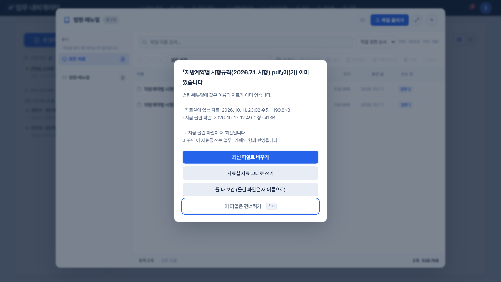
- 개정된 법령을 같은 파일 이름으로 올리면 「이미 있습니다」 창이 뜹니다. [최신 파일로 바꾸기]를 고르면 같은 자료(고유번호)가 새 판이 되어, 이 법령을 참고 자료로 쓰는 모든 업무가 새 판을 봅니다.
- 그래서 파일 이름에는 시행일을 넣지 않는 것이 좋습니다(예: 「지방계약법 시행령.pdf」). 이름이 다르면 새 자료로 더해지고, 업무들은 예전 판을 계속 봅니다. 업무팁 「근거」의 조문 번호는 사람이 확인해 고쳐야 합니다.

- 기안·보고·행정 서식과 예시 공문을 모읍니다. 할 일에 연결해 일할 때 바로 꺼내 씁니다. 오른쪽 클릭 「🔗 쓰는 곳 보기 (n곳)」로 어느 업무의 어느 할 일이 이 서식을 쓰는지 봅니다.
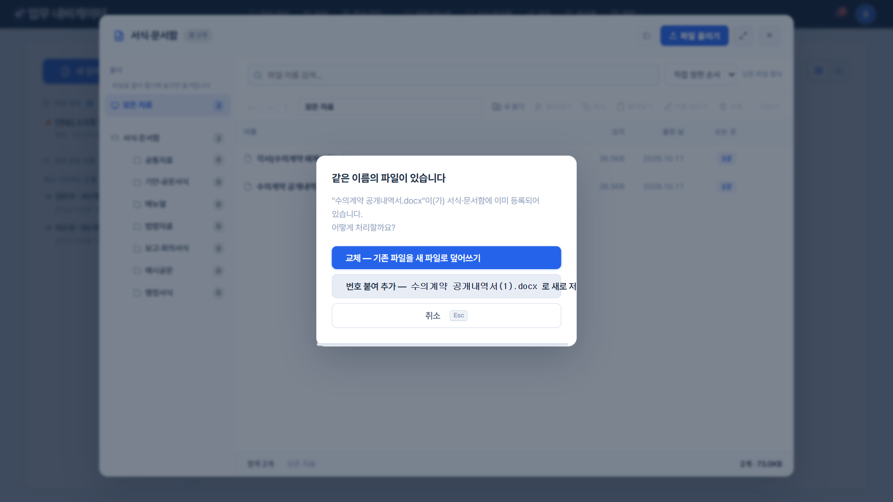
- 새 판 서식을 같은 파일 이름으로 올리면 「같은 이름의 파일이 있습니다」: [교체 — 기존 파일을 새 파일로 덮어쓰기] · [번호 붙여 추가] · [취소](Esc). 교체하면 이 서식을 연결한 모든 할 일이 새 판을 엽니다.
9. 안전하게 지키기 · 설정
지운 업무는 30일 동안 휴지통에 남고, 백업 파일 하나로 모든 자료를 보관하고 되돌립니다.

- 지운 업무는 30일 동안 남습니다. 줄을 두 번 누르거나 오른쪽 클릭 → 복구. 업무 관리·목록에서 지운 것은 알림의 [실행 취소]로 바로 되살릴 수도 있습니다.

- 설정 → 백업 및 복원 → [지금 백업하기]: 업무·첨부·서식·법령·매뉴얼·설정을 파일 하나로 저장합니다. 백업 알림 주기를 정해 두면 잊지 않게 알려 줍니다.
- [파일 선택…]으로 백업을 되돌리면 「백업한 날 상태로 되돌립니다 — 지금 업무 n건 → 백업의 업무 m건」을 묻고, 되돌리기 전 지금 자료를 「복원 전 자동백업」 파일로 먼저 저장합니다(마음이 바뀌면 그 파일로 다시). [취소]하면 아무것도 바뀌지 않습니다.
- PC나 브라우저를 바꾸기 전에는 꼭 백업하세요 — 자료는 브라우저마다 따로 저장됩니다.
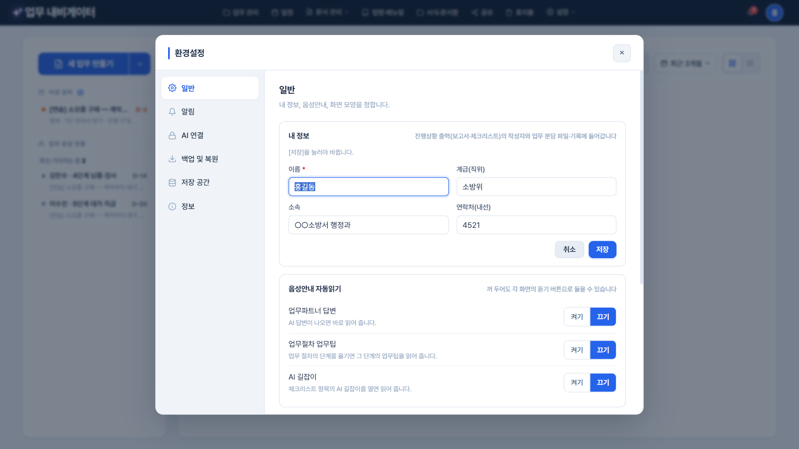
- 오른쪽 위 이름 동그라미를 누르면 환경설정 → 일반이 내 정보 고치기 상태로 열립니다(이름·계급·소속·연락처, Enter 저장 · Esc 취소). 같은 칸이 처음 켤 때 창·진행상황 출력 작성자 창에도 쓰입니다.
- 일반 순서: 내 정보 → 음성안내 → 화면(다크/라이트 · 읽는 글 크기) → 주소록. 왼쪽 탭: 일반 · 알림 · AI 연결(배포판은 보안 정책상 잠김) · 백업 및 복원 · 저장 공간 · 정보(버전·바뀐 점).
부록 · 자주 묻는 질문
업무가 안 보여요
업무는 브라우저마다(엣지·크롬, 프로필마다) 따로 저장됩니다. 늘 쓰던 브라우저로 프로그램 파일을 여세요. 다른 PC로 옮길 때는 설정 → 백업 및 복원 → [지금 백업하기] 파일을 새 PC에서 [파일 선택…]으로 되돌립니다. 목록 오른쪽 기간 단추가 「최근 3개월」이면 오래된 업무는 「전체 기간」에서 보입니다.
같은 프로그램을 창(탭) 두 개에서 열었어요
한쪽에서 고친 것이 다른 창에 보이지 않아 덮어쓸 수 있으므로, 두 번째 창을 열면 「다른 창에서도 열려 있습니다」 알림이 뜹니다. 하나만 쓰고 나머지는 닫으세요. 프로그램은 불러오기가 끝나기 전에는 저장하지 않고, 이 창이 모르는 업무는 지우지 않으며, 한꺼번에 많이 지우려 하면 멈추는 안전장치가 있습니다.
실수로 지웠어요
알림의 [되돌리기]·[실행 취소] 또는 Ctrl+Z. 시간이 지났으면 휴지통(30일). 그보다 오래됐으면 백업 파일.
법령·서식이 바뀌었어요
같은 파일 이름으로 올리고 「최신 파일로 바꾸기」(법령·매뉴얼) · 「교체」(서식·문서함)를 고르면 연결된 모든 업무가 새 판을 봅니다. 업무팁의 조문 번호는 직접 확인해 고치세요.
다른 사람에게 일을 맡겼는데 회신이 안 와요
왼쪽 「업무 분담 현황」에서 회신 기한(D-n)을 봅니다. 직접 하려면 그 줄의 메뉴 → 「회수하고 직접 처리」(먼저 묻습니다). 회수했다고 담당자에게 알려 주세요.
AI 단추가 안 보여요
배포판은 보안 정책상 외부 AI 연결이 막혀 있어 AI 관련 단추를 숨깁니다. 체크리스트·업무팁·분담·출력 등 나머지 기능은 모두 그대로 씁니다.
부록 · 마우스와 단축키
어디서나
| Esc | 떠 있는 메뉴 → 창 → (일하는 화면이면) 고른 줄 → 업무 목록 순서로 한 단계씩 닫기. 검색칸에서는 검색어부터 지우기 |
|---|---|
| 로고 「✦ 업무 내비게이터」 | 처음 화면(업무 목록 맨 위)으로 |
| Ctrl+N | 새 업무 |
일하는 화면
| 한 번 클릭 (줄) | 처리결과 한 줄 입력칸 · 오른쪽 패널에 그 항목 미리 보기 |
|---|---|
| 두 번 클릭 (줄) | 항목 창 |
| 오른쪽 클릭 · ⋯ | 체크/체크 취소 · 건너뛰기 · 해당 없음 · 길잡이 · 처리결과 · 업무팁 · 서식 · 마감일 |
| Enter (처리결과 칸) | 저장하고 다음 할 일로 |
| Shift+Enter (처리결과 칸) | 줄바꿈 |
| ⤢ · 가가 (업무 절차 머리) | 넓게 보기 · 읽는 글 크기 |
체크리스트 편집
| 한 번 클릭 | 줄 고르기 (Ctrl·Shift 여러 줄) |
|---|---|
| 두 번 클릭 · F2 | 이름 바꾸기 (Enter 확정 · Esc 취소) |
| 끌기 | 옮기기 |
| ↑ ↓ (Shift) · Ctrl+A | 줄 옮겨 고르기 · 모두 고르기 |
| Insert | 아래에 새 줄 |
| Alt+Shift+↑↓ | 줄 위치 바꾸기 |
| Tab / Shift+Tab | 할 일로 / 단계로 |
| Delete · Ctrl+X/C/V · Ctrl+Z | 삭제 · 잘라내기·복사·붙여넣기 · 되돌리기 |
업무 관리·법령·서식·휴지통 창 (탐색기)
| 한 번 / 두 번 클릭 | 고르기 / 열기 |
|---|---|
| Ctrl·Shift·끌어서 고르기 | 여러 개 |
| F2 · Delete | 이름 바꾸기 · 삭제 |
| Ctrl+X/C/V · Ctrl+Z | 잘라내기·복사·붙여넣기 · 되돌리기 |
| Alt+← → ↑ · Backspace | 뒤로 · 앞으로 · 상위 폴더 |
| Ctrl+Shift+N | 새 폴더 |